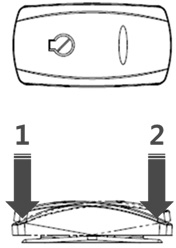
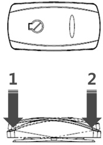
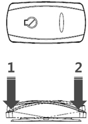

Engine stop switch
 

This switch stops the engine under an emergency condition.
- At this position, the engine stops.
- At this position, the basic condition is maintained

This switch stops the engine under an emergency condition.